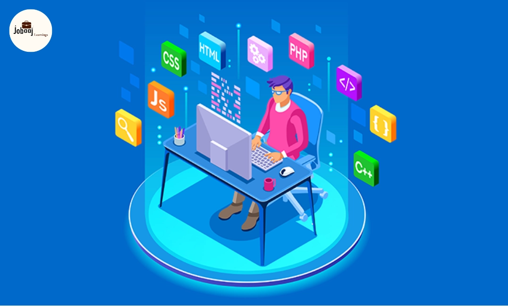

Cybersecurity Student and Technology Learner
Welcome to My Personal Portfolio
Hi, I am Mark Aitken, a cybersecurity student at BYU-Idaho. I enjoy learning about technology, networking, web development, and information security.
Learn More About Me
Learning Through Experience
My education and personal projects are helping me build the technical and communication skills I will need for a future career in cybersecurity.